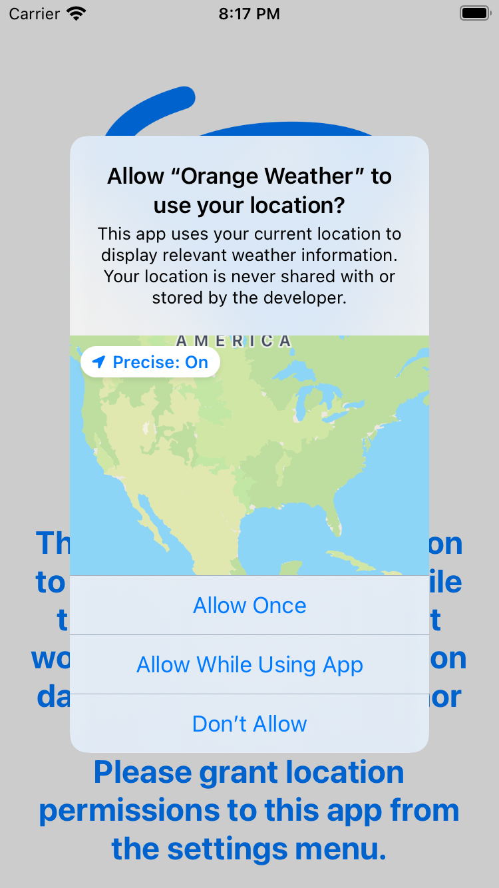
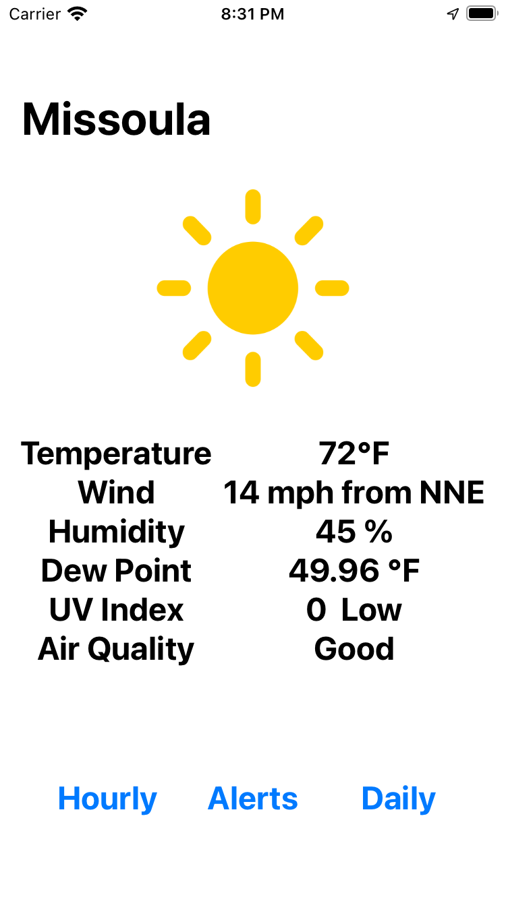

An Important Note:
iOS 16 will include the Apple Weather Kit API, providing additional functionality and eliminating the dependency upon a call-limited API. I plan to refactor this project to utilize Weather Kit once iOS 16 is in stable release (Fall, 2022).
A Brief Introduction to Swift
Orange Weather allows users to view current weather conditions as well as hourly and daily forecasts at their current location. Its development process provided a great opportunity to learn more about Swift, SwiftUI, and how to receive API data within an iOS app. Having previously created apps written in Kotlin and Dart, a lot of the Swift syntax and functionality seemed familiar. All three languages are strongly typed, differentiate between mutable and immutable variables, and provide a means of implementing anonymous functions (known as closures in Swift). Out of the three languages mentioned above, Swift quickly became my favorite as it has some features that make life so much easier!
To start, I was delighted that similar to C++, Swift allows for object-oriented programming through the use of not only classes, but also structs. In Swift, both structs and classes are used to create objects that contain members and/or functions related in some way. Classes are able to inherit attributes from other classes, but inheritance is not a capability among structs. Structs are also said to be immutable, meaning that if a given struct is modified, instead of changing a variable at a location in memory allocated to the struct, an entirely new struct will be created with the updated variable. An example of this is below:
struct Cat {
let _class = "Mammal" // _class is immutable, a spoecies can't change class
var paws: Int
var tail: Bool
var color: String
}
var CremePuff = Cat(paws: 4, tail: true, color: "beige")
CremePuff.paws = 3 // Creampuff will be copied and the variable paws set to 3 in the fresh copy
let Granpa = Cat(paws: 4, tail: true, color: "unknown")
Granpa.color = "black" // this will not compile because Granpa was defined as immutable using the let keyword
* _class is prefixed with an underscore because class is a keyword in Swift
Who are CremePuff and Granpa?
Another very welcomed feature in Swift is the ability to extend types (either built-in or custom)
through
the use of extensions.
Since
structs
are a type, this allows us to extend the functionality of our structs in situations where this is
desirable,
and by using the private keyword, we can contain the effect this extension has within a
single
module.
extension Cat {
func meow() {
print("Meow")
}
}
Granpa.meow()
The code above will print: Meow
First Impressions of SwiftUI
SwiftUI was released by Apple in 2019 as an updated way to build user interfaces in a declarative form. Apple has invested heavily in developing and promoting the adoption of SwiftUI as it provides a way to design user interfaces across all Apple devices (as opposed to selecting UIKit for iOS devices or AppKit for Mac OS X). SwiftUI contains all of the same user interface (UI) elements I became familiar with using in Storyboard layouts, such as `UIButton` and `UITableView, but provides for a different way of implementing these elements within an app.
It might just be me, but it seems like declarative programming frameworks have been gaining a lot of momentum over the past several years. Android also released a declarative framework for building apps called Jetpack Compose in 2019. Declarative programming describes a modality of programming where the desired outcome is described using code, and a compiler or framework is responsible for accomplishing this outcome. Imperative programming refers to a programmer explicitly specifying how to accomplish an outcome in a step-by-step process. Previously, I have used Terraform> to provision cloud infrastructure, and so the declarative concept was a familiar one.
In addition to providing a cross platform means of defining application layouts using a declarative framework, SwiftUI also simplifies application state management. The state of an application can change very rapidly, especially in apps that are performing work with data retrieved from the internet. SwiftUI abstracts away much of an application's state management, and this will be explored in greater detail below. Additionally, SwiftUI is constantly being updated in order to provide improved access to Apple APIs.
Orange Weather: The App
-
The entry point to the application is stored in a struct named
Orange_WeatherApp. -
This struct is annotated with
@mainto identify it as the main view. -
This struct is used to inform the app to display
MainWeatherViewonce the app is initialized.
import SwiftUI
@main
struct Orange_WeatherApp: App {
var body: some Scene {
WindowGroup {
MainWeatherView()
}
}
}
-
The
MainWeatherViewstruct is the initial point of entry that a user has with the app. As such it has been designed to respond immediately if a user is not connected to the internet or if they have not granted location permissions to the app. In order to perform these checks, methods have been defined in two classesNetworkingandNetworkStatus. -
Networkingwill be examined in detail below, but contains members and methods which are related to device location, permissions, and requesting information from the OpenWeather API. -
NetworkStatuscontains members and methods solely related to the connectivity status of the device. -
Both instances have been annotated as
@StateObject. SwiftUI allows structs and classes to publish members which can then be observed by other structs or classes. If a struct or class observes an object that it instantiates, the@StateObjectannotation should be used. If an observable object is then later passed into another class, that referencing class should annotate the observed object with theObservedObjectannotation. -
Apple provides the
CLLocationManagerAPI that developers can use to interface with a device location. This API sends and receives location information using theCLLocationDegreesdata type. -
The
update()helper method is used to perform API requests anytime the UI should be updated to show the most recent weather data. -
In SwiftUI, a
Viewis a protocol. Structs and classes are said to conform to protocols. (Protocols are analagous to interfaces in Java and Kotlin). In order for a given view to conform to theViewprotocol, it must implement a variable namedbodywhich describes the view. -
The declaration
var body: some View { ...may seem confusing at first. This declaration defines thebodyattribute necessary forMainWeatherViewto conform to theView protocol. But sincebodyis a variable and not a class, struct, or enumeration, the syntaxvar body: some Viewmeans that the variablebodyis some type of view. It could be aUITextView, aUITableView, or any other type of view, but declaring its type as aViewis essential for the compiler operations that allow SwiftUI to update UI elements so quickly. - Immediately upon the view being displayed, Orange Weather checks to see if the user device is connected to the internet, and if it is not, an error message will be shown to the user explaining why an internet connection is required.
-
A similar check is performed for location-based permissions. Orange Weather requires a user's
location
in order to obtain current weather information at that location. Thus, at a minimum, a user must
grant permission to the app to access device location while the app is in use. The first time
that
the app
runs on a user device, they will be prompted with the following:
 - If they fail to select "Allow Once" or "Allow While Using App" a view describing the problem will be shown. This view is visible in tha background until the user makes a decision.
-
The UI content which is intended to be displayed if a device is connected to the internet and
permissions have been granted has been wrapped inside a
NavigationViewwhich has several benefits:- Each navigation screen is now given a title, and in the case of the main view, I have programmatically set the title to match the current device location.
- Subsequent views navigated to will also be assigned titles, and a back arrow will appear at the top of the screen next to the title allowing the user to easily navigate back to the main view.
- NavigationViews provide a lot of accessibility configuration options to make navigating the app easier for all persons.
-
If all goes well, our application should quickly load the following View:

import SwiftUI
import CoreLocation
/* The initial View shown in the application. From here, a user
is able to see current weather information as well as navigate to other
views of the app. If a user is not connected to the internet, or
has not granted location permissions to this app, the view will
display an error message. */
struct MainWeatherView: View {
/* State objects are used here as opposed to ObservedObjetcs since
these objects are being instantiated in this class*/
@StateObject var network = Networking() // object containing location and weather information
@StateObject var networkConn = NetworkStatus() // object containing network connectivity status
var lat: CLLocationDegrees {
return self.network.lastLocation?.coordinate.latitude ?? 0
}
var lon: CLLocationDegrees {
return self.network.lastLocation?.coordinate.longitude ?? 0
}
var locationString: String {
return self.network.locationString?.name ?? "Orange Weather"
}
func update(lat: CLLocationDegrees, lon: CLLocationDegrees) {
self.network.getLocationString(lat, lon)
self.network.getMainWeather(lat, lon)
self.network.getAQI(lat, lon)
}
var body: some View {
// If a user is not connected to the internet
if !networkConn.isConnected {
Image(systemName: "antenna.radiowaves.left.and.right")
.resizable()
.aspectRatio( contentMode: .fit)
.scaleEffect(0.75)
.foregroundColor(.blue)
Text("""
You currently are not connected to the internet. Please connect to Wi-Fi or cellular data in order to use this app.
""")
.fontWeight(.bold)
.font(.system(size: 24))
.foregroundColor(.blue)
.multilineTextAlignment(.center)
.padding()
}
// If a user has not granted location permissions while the app is in use
else if !network.permissions {
Image(systemName: "tornado")
.resizable()
.aspectRatio( contentMode: .fit)
.scaleEffect(0.75)
.foregroundColor(.blue)
Text("""
This app requires permission to access your location while the app is in use. It will not work otherwise. Your location
data is never shared with nor stored by the developer. Please grant location permissions to this app from the settings menu.
""")
.fontWeight(.bold)
.font(.system(size: 24))
.foregroundColor(.blue)
.multilineTextAlignment(.center)
.padding()
} else { // Display the intended view
NavigationView {
VStack {
if let response = network.weatherResponse {
Image(systemName: WeatherModel.getConditionName(weatherID: (response.current.weather[0].id)))
.resizable()
.aspectRatio( contentMode: .fit)
.scaleEffect(0.75)
.foregroundColor(WeatherModel.getIconColor(weatherID: response.current.weather[0].id))
}
HStack {
VStack{
Text("Temperature")
.fontWeight(.bold)
.font(.system(size: 24))
Text("Wind")
.fontWeight(.bold)
.font(.system(size: 24))
Text("Humidity")
.fontWeight(.bold)
.font(.system(size: 24))
Text("Dew Point")
.fontWeight(.bold)
.font(.system(size: 24))
Text("UV Index")
.fontWeight(.bold)
.font(.system(size: 24))
Text("Air Quality")
.fontWeight(.bold)
.font(.system(size: 24))
Spacer()
}
VStack {
if let response = network.weatherResponse {
Text("\(response.current.temp, specifier: "%.0f")°F")
.fontWeight(.bold)
.font(.system(size: 24))
Text("\(response.current.wind_speed, specifier: "%.0f") mph from \(WeatherModel.getWindDirection(degree: response.current.wind_speed))")
.fontWeight(.bold)
.font(.system(size: 24))
Text("\(response.current.humidity, specifier: "%.0f") %")
.fontWeight(.bold)
.font(.system(size: 24))
Text("\(response.current.dew_point, specifier: "%.2f") °F")
.fontWeight(.bold)
.font(.system(size: 24))
Text("\(response.current.uvi, specifier: "%.0f") \(WeatherModel.getUvIndexCategory(uvIndex: response.current.uvi))")
.fontWeight(.bold)
.font(.system(size: 24))
}
if let response = network.currAQI {
Text(WeatherModel.getAQIstring(aqi: response.list[0].main.aqi))
.fontWeight(.bold)
.font(.system(size: 24))
}
Spacer()
}
}
HStack {
NavigationLink(destination: HourlyWeatherView(hourly: network.weatherResponse?.hourly)) {
ButtonView(text: "Hourly")
}
NavigationLink(destination: WeatherAlertView(alerts: network.weatherResponse?.alerts)) {
ButtonView(text: "Alerts")
}
NavigationLink(destination: DailyWeatherView(daily: network.weatherResponse?.daily)) {
ButtonView(text: "Daily")
}
}
}
.navigationTitle(locationString)
.environmentObject(network)
.onAppear {
/* Depending upon netowrk latency, the weather information, location string, and air quality index
may not have been retrieved and/or decoded by the time the view appears. If lat and lon are still nil,
update the UI*/
if lat == 0 && lon == 0 {
DispatchQueue.main.asyncAfter(deadline: .now() + 2, execute: {
self.update(lat: lat, lon: lon)
})
}
self.update(lat: lat, lon: lon)
}
}
}
}
}
Additional Views:
Orange Weather's MainWeatherView displays current weather information and also links to
additional views describing
the hourly forecast, daily forecast, and any currently-issued weather alerts. To implement these
secondary
views,
it is first necessary to define them as a struct specifying what information is shown in
each
view. This process is shown below for an HourlyView (below left). Once
HourlyView has been defined, it is then possible to create a list of
HourlyView
views
useful for displaying many forecasted hourly conditions, each displayed in their own view. The process
of
creating this List view is shown below on the right.
/* A View used to display weather infromation specific to a given hour.
Multiple HourlyView Views will be displayed in a list. */
struct HourlyView: View {
let calendar = Calendar.current
var hourly: Hourly
var body: some View {
HStack {
VStack {
Spacer()
Text("\(WeatherModel.getWeekDay(day: Int(calendar.component(.weekday, from: NSDate(timeIntervalSince1970: TimeInterval(hourly.dt)) as Date))))")
.fontWeight(.bold)
Text("\(WeatherModel.getTimeAs12hr(hour: Int(calendar.component(.hour, from: NSDate(timeIntervalSince1970: TimeInterval(hourly.dt)) as Date))))")
.fontWeight(.bold)
Spacer()
Text("\(hourly.temp, specifier: "%.0f")°F")
.fontWeight(.bold)
Spacer()
}
Image(systemName: WeatherModel.getConditionName(weatherID: hourly.weather[0].id))
.resizable()
.aspectRatio( contentMode: .fit)
.scaleEffect(0.75)
.foregroundColor(WeatherModel.getIconColor(weatherID: hourly.weather[0].id))
VStack {
Spacer()
Text("Wind \(hourly.wind_speed, specifier: "%.0f") mph \(WeatherModel.getWindDirection(degree: hourly.wind_deg))")
Spacer()
Text("\(hourly.pop * 100, specifier: "%.0f")% chance of \(WeatherModel.getRainorSnow(temp: hourly.temp))")
Spacer()
}
}
}
}
/* A View describing the hourly forecast for a given location. */
struct HourlyWeatherView: View {
var hourly: [Hourly]?
var body: some View {
if let currHourly = hourly {
List(currHourly) { forecast in
HourlyView(hourly: forecast)
}
.navigationTitle("Hourly")
} else {
Image(systemName: "questionmark")
.resizable()
.aspectRatio( contentMode: .fit)
.scaleEffect(0.75)
.foregroundColor(.blue)
Text("Something went wrong... ")
.fontWeight(.bold)
.font(.system(size: 24))
.foregroundColor(.blue)
.multilineTextAlignment(.center)
Spacer()
.navigationTitle("Hourly")
}
}
}
This same process of defining a base view and then creating a List consisting of base views
has
been repeated for both AlertView and DailyView views. Full source code can be
found on the project's GitHub repository.
Networking:
The most difficult part of creating Orange Weather involved retrieving a device's current location and using this location in subsequent API calls. The class examined below contains logic to accomplish this:
-
Our networking class needs to expose the results of its API calls. This is done by annotating
the objects that will be observed in the UI by using the
@Publishedannotation. Note that these objects have been defined in a separate file, which will be examined later. Most importantly, when defining these objects as structs, they must conform to theObservable Objectprotocol in order to be published and observed. -
The overridden
init()method is responsible for setting the location manager delegate property to be itself. The delegate pattern is very common in iOS development, and many of Apple's APIs implement this pattern. Effectively, by setting the current class as the location manager delegate, we are allowing this class to respond to permission changes, handle errors, respond to location events, and in general, control the functioning of theCLLocationManagerAPI instance. Also ininit(), the desired location is set to an area reasonable for obtaining accurate weather data, adequate permissions are requested of the user, and the instance is instructed to begin updating the user's location. - It is essential to account for the location permissions currently granted to Orange Weather by the user. If the user has not granted adequate permissions, our API calls will not return data in the expected format, and if this is not handled, our app will crash. We will explore additional ways to gracefully handle an unexpected API response, but only calling API endpoints once we are certain that a device has the correct lat lon coordinates is an important first step.
-
The first time a user launches Orange Weather, the location permissions granted to the app are
.notDetermined. Hopefully, the user grants permission to the app to access device location while the app is in use, but this will take a few moments. Once a user has decided whether or not to grant permissions, thedidChangeAuthorizationsmethod will be called, which will in turn update the variables inNetworkingresponsible for tracking current permission status. -
Once the instance of
CLLocatinManagerupdates thelastLocationproperty the methoddidUpdateLocationswill be called. Since ourNetworkingclass is set as the delegate for this instance, we are able to define what should happen once location has been updated. Here, we have instructed the app to perform API calls that will update the published properties that are being observed in the UI. Once this completes, we instructCLLocationManagerto stop updating the device location. If we did not do this, the app would continuously update the device location every few seconds and perform three API calls each time, and so we would quickly exceed our limited available API calls (OpenWeather limits to 60 API calls per minute at their free tier). -
Lastly, the three API calls are defined:
getMainWeatherloads data representing current weather conditions into a published object,getLocationStringloads a string representation of the user's current location into a published object, andgetAQIdoes the same for the current Air Quality Index. -
Each function defines a string representation of an API request. This string is used to create a
URLSessionin order to send a request and process a response. This response will consist of JSON data, which will need to be decoded, into a series ofstructrepresentations of that data. Assuming all goes well, the response will be decoded and the data will be used to update the UI. Note that this last step is performed on the main threadDispatchQueue.main.asyncensuring that once this data is available, it will be updated on the main thread, which is the thread devoted to UI updates. -
An identical process occurs for
getLocationStringandgetAQI. - Next, we will examine how to define structs in order to decode the JSON response.
class Networking: NSObject, ObservableObject, CLLocationManagerDelegate {
@Published var weatherResponse: WeatherResponse?
@Published var locationString: LocationResponse?
@Published var currAQI: AQIresponse?
private let locationManager = CLLocationManager()
@Published var locationStatus: CLAuthorizationStatus?
@Published var lastLocation: CLLocation?
override init() {
super.init()
locationManager.delegate = self
locationManager.desiredAccuracy = kCLLocationAccuracyHundredMeters
locationManager.requestWhenInUseAuthorization()
locationManager.startUpdatingLocation()
}
var statusString: String {
guard let status = locationStatus else {
return "unknown"
}
switch status {
case .notDetermined: return "notDetermined"
case .authorizedWhenInUse: return "authorizedWhenInUse"
case .authorizedAlways: return "authorizedAlways"
case .restricted: return "restricted"
case .denied: return "denied"
default: return "unknown"
}
}
var permissions: Bool {
switch statusString {
case "notDetermined": return false
case "authorizedWhenInUse": return true
case "authorizedAlways": return true
case "restricted": return false
case "denied": return false
default: return false
}
}
func locationManager(_ manager: CLLocationManager, didChangeAuthorization status: CLAuthorizationStatus) {
locationStatus = status
}
func locationManager(_ manager: CLLocationManager, didUpdateLocations locations: [CLLocation]) {
guard let location = locations.last else { return }
lastLocation = location
getMainWeather(self.lastLocation?.coordinate.latitude ?? 0, self.lastLocation?.coordinate.longitude ?? 0)
getLocationString(self.lastLocation?.coordinate.latitude ?? 0, self.lastLocation?.coordinate.longitude ?? 0)
getAQI(self.lastLocation?.coordinate.latitude ?? 0, self.lastLocation?.coordinate.longitude ?? 0)
locationManager.stopUpdatingLocation()
}
func getMainWeather(_ lat: CLLocationDegrees, _ lon: CLLocationDegrees) {
if let loc = URL(string: "https://api.openweathermap.org/data/2.5/onecall?appid=REDACTED&exclude=minutely&units=imperial&lat=\(lat)&lon=\(lon)") {
let session = URLSession(configuration: .default)
let task = session.dataTask(with: loc) { data, response, error in
if error == nil {
let decoder = JSONDecoder()
if let safeData = data {
do {
let results = try decoder.decode(WeatherResponse.self, from: safeData)
DispatchQueue.main.async {
self.weatherResponse = results
}
print("weatherResponse was succesfully updated for \(lat) \(lon)")
} catch {
print(error)
}
}
} else {
print(error!)
}
}
task.resume()
}
}
func getLocationString(_ lat: CLLocationDegrees, _ lon: CLLocationDegrees) {
if let loc = URL(string: "https://api.openweathermap.org/data/2.5/weather?appid=REDACTED&exclude=minutely&units=imperial&lat=\(lat)&lon=\(lon)") {
let session = URLSession(configuration: .default)
let task = session.dataTask(with: loc) { data, response, error in
if error == nil {
let decoder = JSONDecoder()
if let safeData = data {
do {
let results = try decoder.decode(LocationResponse.self, from: safeData)
DispatchQueue.main.async {
self.locationString = results
}
print("Location was succesfully updated for \(lat) \(lon)")
} catch {
print(error)
}
}
} else {
print(error!)
}
}
task.resume()
}
}
func getAQI(_ lat: CLLocationDegrees, _ lon: CLLocationDegrees) {
if let loc = URL(string: "https://api.openweathermap.org/data/2.5/air_pollution?appid=REDACTED&exclude=minutely&lat=\(lat)&lon=\(lon)") {
let session = URLSession(configuration: .default)
let task = session.dataTask(with: loc) { data, response, error in
if error == nil {
let decoder = JSONDecoder()
if let safeData = data {
do {
let results = try decoder.decode(AQIresponse.self, from: safeData)
DispatchQueue.main.async {
self.currAQI = results
}
print("AQI was succesfully updated for \(lat) \(lon)")
} catch {
print(error)
}
}
} else {
print(error!)
}
}
task.resume()
}
}
}
Decoding JSON in Swift
I was delighted with the simplicity involved in decoding the JSON response in Swift. This process is
considerably
more straightforward than what I was accustomed to in Android, which required the use of third-party
libraries
such as RetroFit and Moshi. In Swift, it is sufficient to examine the API response and construct
struct objects containing the properties you wish to decode. This is something I would have
definitley taken for granted if I had not formerly used RetroFit and Moshi, which require every JSON
response field
to be declared inside some object. The below code demonstrates what the response returned by the API
endpoint
called in getMainWeather will look like. Note that for the sake of readability, only the
elements contained in the current array have been copied. hourly and
daily are arrays containing a large number of similarly-structured elements.
"lat": 46.8721,
"lon": -113.994,
"timezone": "America/Denver",
"timezone_offset": -21600,
"current": {
"dt": 1655513488,
"sunrise": 1655466057,
"sunset": 1655523177,
"temp": 75.79,
"feels_like": 74.95,
"pressure": 1002,
"humidity": 40,
"dew_point": 49.78,
"uvi": 1.18,
"clouds": 0,
"visibility": 10000,
"wind_speed": 17.27,
"wind_deg": 240,
"wind_gust": 25.32,
"weather": [
{
"id": 800,
"main": "Clear",
"description": "clear sky",
"icon": "01d"
}
]
},
"hourly": [...],
"daily": [...],
}
Examining this response, we can cherry pick the elements that will be most useful for our app and create structs to receive these elements:
-
Notice in the code for
getMainWeather()that theJSONDecoderexpects a parameterWeatherResponse.self. This refers to aWeatherResponsestruct that the decoder will use to map the JSON data to. Theselfkeyword is necessary because theWeatherResponsestruct is referenced from within a closure. More about this can be found here. -
In this explanation, we are concerned with the JSON response contained in the
currentarray as shown above. OurWeatherResponsestruct has now declared properties corresponding to the JSON response elements we are interested in, includingcurrent. Next, we must create structs to receive the elements nested inside of thecurrentarray.
struct WeatherResponse: Decodable{
let current: Current
let hourly: [Hourly]
let daily: [Daily]
let alerts: [Alert]?
}
-
The
Currentstruct has declared attributes for each field we are interested in using from the JSON response. Note thatweatheris of typeWeatherarray, and so we need to define one lastWeatherstruct to describe an individualWeatherelement. The only nested element we are interested in isid, an integer that represents a weather condition (i.e. rain, clouds, sun, wind, etc.) This element will be used to display an icon that best represents current or forecasted weather conditions. -
Lastly, it is important to note that each struct we intend to use for JSON decoding must
conform to the
Decodableprotocol. This makes things considerably easier, as the protocol handles the process of decoding JSON response data into standard library types, such as strings, integers, and doubles automatically. -
Provided that all of our defined
structattributes can be ultimately mapped to Standard Library types, this is all that is required. When working with custom types, it is possible to define the decoding process using Coding Keys.
struct Current: Decodable {
let temp: Double
let humidity: Double
let uvi: Double
let wind_speed: Double
let wind_deg: Double
let dew_point: Double
let weather: [Weather]
}
struct Weather: Decodable{
let id: Int
}
A similar procedure has been followed to define structs that will receive the other elements of the JSON response used in Orange Weather. We are almost done, lastly, we will examine some helper methods that enhance the user experience of this app.
Helper Methods and UI Improvements
-
One way to enhance user experience is to provide a graphic representation of weather conditions
either in a forecast or currently as shown on
MainWeatherView. This is something common in many weather apps. - I have done this by making use of SF Symbols (San Fransisco Symbols), a collection of icons Apple provides for use in developing iOS and Mac OS apps.
-
A switch statement is used to determine which SF Symbol to display based upon the value
received from the API response contained in the element
idthat we examined above.
/* Given an integer representing a weather condition,
will return a String corresponding to an SF Symbol to be displayed. */
static func getConditionName(weatherID: Int) -> String {
switch weatherID {
case 200..<300:
return "cloud.bolt.rain.fill"
case 300..<400:
return "cloud.drizzle.fill"
case 500..<600:
return "cloud.rain.fill"
case 600..<700:
return "cloud.snow.fill"
case 701:
return "cloud.fog.fill"
case 711:
return "smoke.fill"
case 721:
return "sun.haze.fill"
case 731:
return "sun.dust.fill"
case 741:
return "cloud.fog.fill"
case 751:
return "sun.dust.fill"
case 761:
return "sun.dust.fill"
case 762:
return "sun.dust.fill"
case 771:
return "wind"
case 781:
return "tornado"
case 800...802:
return "sun.max.fill"
case 803...804:
return "cloud.sun.fill"
default:
return "questionmark"
}
}
-
The API endpoint responsible for sending information about air quality sends this information as
an integer value. It would be a very poor user experience to see something like:
Current Air Quality: 5when, in fact, the air quality they are experiencing is among the worst in the entire world. We can define helper methods that will allow us to programmatically give the user context about the current air quality. -
getAQIstringwill return a string representation of the current air quality, and this string representation will be used within a Text view to provide easy-to-understand information about the air quality. -
Additionally, we can programmatically assign a color to the text color used in
MainWeatherView, changing text color to orange, red, and purple as the air quality progressively worsens.
/* Given an Integer representing the current Air Quality Index, will return
a String description of the current index. */
static func getAQIstring(aqi: Int) -> String {
switch aqi {
case 1: return "Good"
case 2: return "Fair"
case 3: return "Moderate"
case 4: return "Poor"
case 5: return "Very Poor"
default: return "Not Available"
}
}
/* Given an Integer representing the current Air Quality Index, will return
a color representation of the current index. */
static func getAQIColor(aqi: Int) -> Color {
switch aqi {
case 1: return .primary
case 2: return .primary
case 3: return .orange
case 4: return .red
case 5: return .purple
default: return .primary
}
}
As demonstrated in the above screenshot, something similar can be done with UV Index and any other UI element.
Download the App and View the Project Source Code
That's it! This project allowed me to learn so much about Swift and Apple iOS APIs. If you would like to explore Orange Weather, you may find it on the Apple App Store at the link below. You may also view the project source code on GitHub.